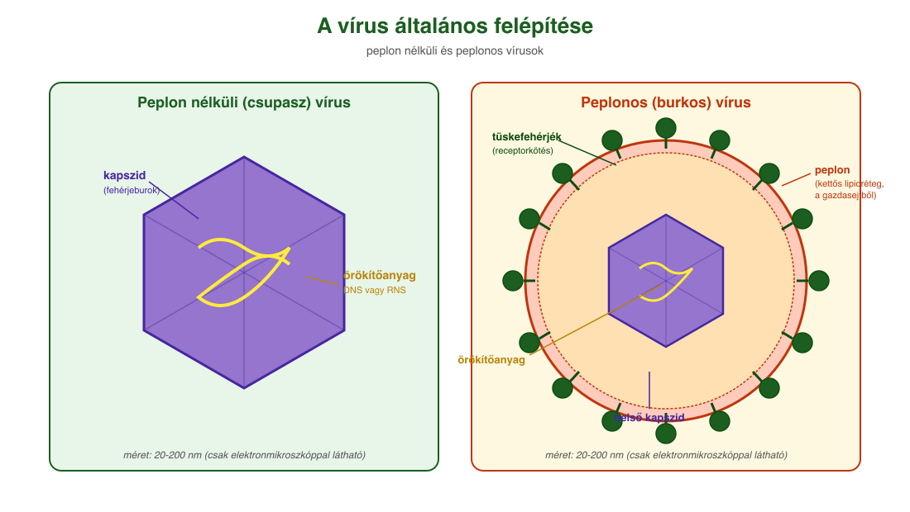
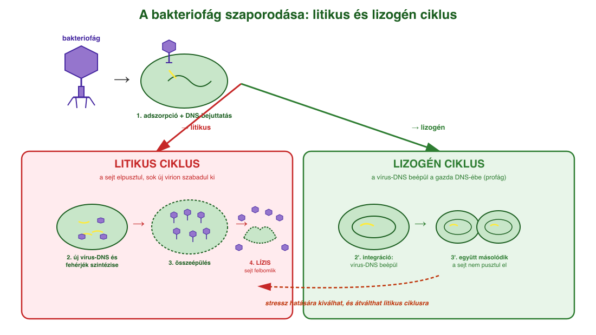
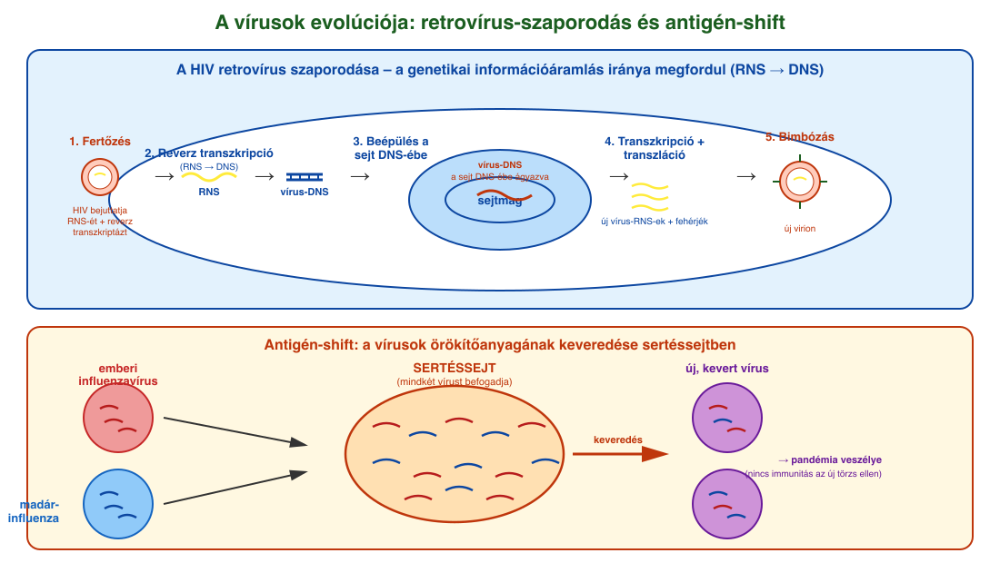

12. Vírusok¶
Általános jellemzés¶
A vírusok nem élőlények, hanem sejtekből kiszabadult genetikai fertőző ágensek. Négy fő tulajdonság alapján különböznek az élővilágtól:
- Nem sejtes felépítésűek. Alapvetően egy örökítőanyagból (DNS vagy RNS) és az azt körülvevő fehérjeburokból (kapszid) épülnek fel. Szerkezetük rendkívül szabályos, többjük kristályos formában akár évekig változatlanul fennmarad. Néhány vírust egy peplon nevű membrán (a gazdasejtből származó kettős lipidréteg) is körülveszi.
- Nincs önálló anyagcseréjük és szaporodásuk. Az alapvető életfunkciókhoz (anyagcsere, szaporodás) be kell jutniuk egy élő sejtbe (gazdasejt), és annak anyagait, energiáját használják fel ahhoz, hogy újabb vírusok jöjjenek létre. Eközben a gazdasejt rendszerint elpusztul.
- Sejtparaziták. A baktériumokkal ellentétben sejten kívül nem mutatnak életjelenségeket, élettelen táptalajon nem tenyészthetők. A sejten kívüli, életjelenséget nem mutató vírus neve virion.
- Nanométeres méretűek (pl. az influenza kórokozója 80–200 nm átmérőjű), így csak elektronmikroszkóppal láthatók, fénymikroszkóppal nem.
A vírusok megfertőzhetik az élet minden sejtformáját: a baktériumokat (a baktériumokat fertőző vírusokat bakteriofágoknak, röviden fágoknak nevezzük), az ősbaktériumokat és az eukariótákat (gombák, növények, állatok) egyaránt.
A vírusfertőzés folyamata¶
A folyamat lépései általánosan:
- Adszorpció: a vírus felismeri a gazdasejtet és hozzákapcsolódik. A felismerés a sejt receptorai révén történik – a vírusfelszíni fehérjék utánozzák a sejtben természetesen megtalálható receptorok ligandumait. A sejtfelszíni glikoproteinek és glikolipidek sziálsavai például az influenzavírus receptorai. A SARS-CoV-2 koronavírus a humán ACE₂-receptorhoz kötődik (amely eredetileg a vérnyomáscsökkentésben vesz részt).
- Penetráció: a vírus enzimekkel feloldja a gazdasejt burkát, és bejuttatja az örökítőanyagát. A fehérjeburok (kapszid) sok esetben kívül marad. Egyes vírusok teljes egészben bejutnak (endocitózis), és a sejten belül vetik le burkukat.
- Dekapszidáció: ha a teljes vírus jutott be, megszabadul a kapszidtól, hogy az örökítőanyag hozzáférhetővé váljon a replikációhoz.
- Makromolekulák szintézise: a gazdasejt enzimei és riboszómái új vírus-örökítőanyagot és vírusfehérjéket állítanak elő. Ehhez különböző replikációs, transzkripciós és transzlációs stratégiákra van szükség attól függően, hogy DNS- vagy RNS-vírus, és hogy a replikáció a sejtmagban vagy a citoplazmában játszódik le.
- Összeépülés és kiszabadulás (lízis): a vírusrészecskék összeállnak, és a sejt felbomlásával vagy a sejthártyával együtt (peplonos vírusoknál) szabadulnak ki.
Litikus és lizogén ciklus¶
A bakteriofágok két alapvetően eltérő stratégia szerint szaporodnak:
- Litikus ciklus: a gazdasejt enzimei másolatokat készítenek a vírus DNS-éről és a vírusfehérjékről, a vírusok összeszerelődnek. A gazdasejt elpusztul (lízis), és több száz új virion szabadul ki, amelyek új gazdasejteket fertőznek meg.
- Lizogén ciklus: a vírus DNS-e beépül a gazdasejt DNS-ébe (profág állapot), és minden sejtosztódáskor együtt másolódik a gazda örökítőanyagával. Évekig csendben maradhat. Esetenként (pl. stresszhatásra) a vírus-DNS kiválik, és beindítja a litikus ciklust.
Az embert és állatokat fertőző vírusok szaporodási ciklusa részben hasonlít ehhez, részben eltér. Pl. a herpeszvírus DNS-e az emberi sejt DNS-ébe beépülve nyugalmi állapotban maradhat, és fizikai (UV-fény) vagy érzelmi stressz hatására aktiválódik újra.
A retrovírusok és az AIDS¶
A HIV (Human Immunodeficiency Virus) retrovírus: RNS-genomot tartalmaz, peplonja van, és a szaporodása során megfordul a genetikai információ áramlásának szokásos iránya (DNS → RNS helyett RNS → DNS). A vírus magával hozza a reverz transzkriptáz enzimet, amely a vírus RNS-éről DNS-t ír át, majd ez a DNS beépül a gazdasejt DNS-ébe. Innen a sejt saját RNS-polimeráza írja át, vírusfehérjék készülnek, és új virionok bimbóznak ki a sejthártyával együtt.
A HIV az immunrendszer sejtjeit támadja meg, ezzel szerzett immunhiányos állapotot (AIDS-et) okoz, amelyben a szervezet más kórokozókkal szemben is védtelenné válik.
A vírus okozta sejtkárosodás és védekezés¶
A közvetlen károsodás okai: a sejt energiájának felhasználása, a sejt saját makromolekuláris szintézisének leállása, a vírus-genom beépüléséből származó mutációk, a gyulladásos válasz (citokinvihar). Egyes vírusok (EBV, HPV) daganatkeltőek lehetnek (onkogén vírusok).
A sejt egyik természetes védekezése az RNS-interferencia: ha kétszálú RNS jelenik meg (ami normális esetben nincs a sejtben), egy enzim rövid darabokra bontja, és ezekkel azonosítja és lebontja a hasonló szekvenciájú vírus-RNS-eket. Ez nemcsak vírusvédekezés, hanem a saját génkifejeződés szabályozója is – a gyógyítás eszközeként is használják (géncsendesítés, miRNS, siRNS).
A vírusok evolúciója és változatossága¶
A vírusok evolúciója gyors. Két fő változatossági forrás:
- Rekombináció (antigén-shift): ha egy sejtbe egyszerre kétféle vírustörzs jut be (pl. sertéssejtbe emberi és madár-influenza), az örökítőanyaguk darabjai keveredhetnek. A létrejövő új vírusra az emberek nem rendelkeznek immunitással → pandémia veszélye.
- Mutáció (antigéndrift): véletlenszerű változások az örökítőanyag szekvenciájában. Az RNS-polimeráz pontatlanabb, mint a DNS-polimeráz (kb. 100 000-szer), ezért az RNS-vírusok különösen változékonyak. A felhalmozódó mutációk miatt a vírus antigénszerkezete annyira megváltozhat, hogy a gazdaszervezet elveszíti az eddigi immunitását.
A vírusok ökológiai szerepe¶
A vírusok hatalmas szereppel bírnak az ökoszisztémák egyensúlyában: egyes becslések szerint percenként 100 millió tonna baktérium pusztul el a Földön vírusok miatt. Az óceáni szénforgalom egyik fő szabályozói; a feltört baktériumokból oldott szerves anyagok szabadulnak fel, amit más heterotróf baktériumok hasznosítanak. Így a vírusok közvetve növelik a nettó légzést és a tápanyagok újrahasznosítását a világóceánokban. A szén-, nitrogén- és foszforciklusok szabályozóiként is azonosították őket.
Vírusok okozta betegségek¶
| Betegség | Kórokozó / fő jellemzők |
|---|---|
| Influenza | magas láz, légúti panaszok, ízületi/izomfájdalom; csepp; védőoltás |
| COVID-19 | SARS-CoV-2; láz, köhögés, íz/szaglás elvesztése; csepp; védőoltás |
| Kanyaró | kiütések, foltok; szövődmények veszélyesek; csepp; MMR-oltás |
| Bárányhimlő | hólyagos kiütés; később övsömör; csepp; védőoltás |
| AIDS | HIV; immunhiányos állapot; vér, nemi váladék; nincs védőoltás |
| Hepatitis A–E | sárgaság, máj-károsodás; A/E széklet, B/C/D vér; védőoltás van (A, B) |
| HPV | szemölcs, méhnyakrák; nemi érintkezés; védőoltás |
| Veszettség | neurológiai tünetek, víziszony; állatharapás; védőoltás |
| Herpesz | hólyagok; ajakon, nemi szerveken; nincs gyógyítás |
Ábrák¶

A vírusok két alaptípusa: bal oldalon a peplon nélküli (csupasz) vírus, amelynek külső határa a fehérjeburok (kapszid); jobb oldalon a peplonos vírus, amelyet a gazdasejtből származó kettős lipidréteg vesz körül, benne tüskefehérjékkel (receptorkötők). Az örökítőanyag (DNS vagy RNS) a kapszidon belül helyezkedik el.

Bakteriofág két lehetséges szaporodási útja. Litikus ciklus (bal): adszorpció → DNS-bejuttatás → új vírusrészecskék szintézise → lízis (a sejt felbomlik, sok új vírus szabadul ki). Lizogén ciklus (jobb): a vírus DNS-e beépül a baktériumkromoszómába (profág), és minden sejtosztódáskor másolódik vele; később (pl. stresszhatásra) kiválhat és átválthat litikus ciklusra.

Felül: a HIV-retrovírus szaporodása. 1. A vírus RNS-ét bejuttatja a sejtbe a reverz transzkriptázzal együtt. 2. A reverz transzkriptáz RNS-ről DNS-t ír (a normál DNS → RNS irány megfordul). 3. A vírus-DNS beépül a sejt DNS-ébe. 4. A sejt saját gépezete vírus-RNS-eket és vírusfehérjéket termel. 5. Az új virionok a sejtmembránnal együtt (peplonosan) bimbóznak ki. Alul: az antigén-shift jelensége: ha egy sertéssejtet egyszerre fertőz emberi és madár-influenza vírus, az örökítőanyag-darabok keveredhetnek, és új, immunológiailag ismeretlen vírustörzs jön létre.
Az anyag az 1. tankönyv 104, 105, 106, 107. oldalain található.